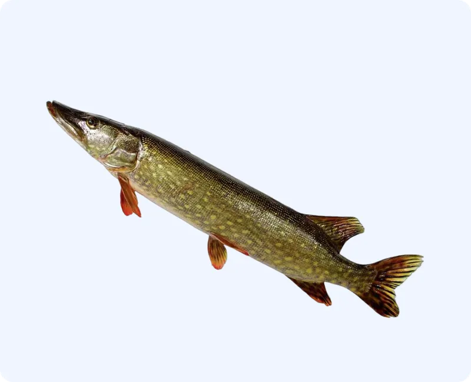

Рыба для пруда
Щука
Цена и наличие
- 25-40 см15 BYN / шт.В наличии
- 40-45 см15 BYN / шт.В наличии
Данные на 23.11.2026.
Характеристики
- Внешний вид
- Тело удлиненное и слегка сжатое с боков
- Сезонность
- Апрель-октябрь
- Возраст
- Сеголетки, годовики
- Максимальный вес
- До 28,4 кг
- Продолжительность жизни
- До 30 лет. Реальная продолжительность жизни зависит от кормовой базы, температуры воды, плотности популяции и условий конкретного водоема
- Половая зрелость
- Самцы обычно достигают половой зрелости в возрасте 2–3 лет, самки — примерно в 3–4 года. В быстрорастущих популяциях отдельные рыбы могут созревать раньше. Средняя длина при первом созревании составляет около 40 см, но может значительно различаться между водоемами
- Питается
- Щука — выраженный хищник. Молодь сначала питается зоопланктоном, личинками насекомых и другими беспозвоночными, но очень рано начинает поедать малька. Основу питания взрослых особей составляет рыба: карась, плотва, окунь и другие доступные по размеру виды. Для щуки также характерен каннибализм
- Температура воды для активного питания и размножения
- Щука активно питается и растет примерно при 15–24 °C, а наиболее благоприятные условия для роста находятся приблизительно в диапазоне 20–24 °C. Нерест проходит ранней весной в холодной воде; для воспроизводства и развития икры оптимален диапазон примерно 6–12 °C
- Условия пруда для содержания
- Подходит достаточно просторный пресноводный пруд с открытой водой и участками водной растительности, которые щука использует как укрытие для охоты и место нереста. Желательны глубина от 1,5–2 м, хорошее качество воды и достаточная кормовая база. Для стабильного содержания желательно поддерживать растворенный кислород выше 5 мг/л, хотя взрослая щука способна кратковременно переносить значительно более низкие значения
- Рост
- Сеголетки 50-150 г, двухлетки 150-500 г, трехлетки 500-1000 г и более
Описание
Щука, величественная и загадочная обитательница водных просторов, вызывает восхищение своей изысканной красотой и характером.
Условия обитания
Щука (Esox lucius) — крупная пресноводная хищная рыба, естественно обитающая в озерах, реках, водохранилищах, заводях и прудах. Для нее характерны одиночный образ жизни и охота из засады. Рыба часто стоит неподвижно среди растений или возле других укрытий, совершая короткий быстрый бросок за добычей. Для содержания щуки желательно сочетание открытой акватории и участков водной растительности. Камыш, тростник, кувшинки и подводные растения создают удобные места для засады и особенно важны для молодой щуки. Полностью лишенный растительности водоем менее естественен для этого вида, но и чрезмерное зарастание всего пруда нежелательно. Щука хорошо приспособлена к климату Беларуси и переносит значительные сезонные изменения температуры. Наиболее активно она растет в теплый период года при температуре примерно 15–24 °C. При этом щука значительно лучше переносит прохладную воду, чем многие теплолюбивые прудовые рыбы. К содержанию кислорода щука менее требовательна, чем форель или осетровые. Тем не менее для стабильного здоровья и хорошего роста желательно поддерживать показатель выше 5 мг/л и не допускать продолжительных заморных условий. Аэрация особенно полезна в небольших прудах с высокой плотностью рыбы. Главное условие успешного содержания — достаточное количество кормовой рыбы. Щука не подходит для водоема, где необходимо сохранить всю мелкую рыбу или молодь декоративных видов. Ее часто используют именно для регулирования чрезмерной численности карася, плотвы и другой мелкой рыбы.
Размножение
Щука относится к одним из самых ранненерестующих прудовых рыб. Размножение начинается весной вскоре после схода льда, когда вода еще остается холодной. Наиболее подходящая температура для нереста и последующего развития икры составляет примерно 6–12 °C. Для нереста взрослые щуки выходят на мелководные участки глубиной обычно несколько десятков сантиметров. Особенно подходят затопленная прошлогодняя трава, прибрежная растительность и неглубокие участки с большим количеством растительного субстрата. Во время нереста одну крупную самку обычно сопровождают несколько более мелких самцов. Икра клейкая и после выметывания прикрепляется к стеблям и листьям растений. Родители кладку не охраняют. В зависимости от температуры воды развитие икры занимает примерно 1–3 недели. После вылупления личинки некоторое время прикрепляются к растениям, используя запас желточного мешка. Затем молодь начинает питаться зоопланктоном, а при достижении достаточного размера быстро переходит на личинок насекомых и малька других рыб. В правильно организованном пруду щука способна самостоятельно размножаться. Для этого особенно важны мелководные заросшие участки, которые весной не осушаются сразу после нереста. Если подходящих нерестилищ нет, естественное воспроизводство может быть слабым даже при наличии взрослых производителей.
Кормление
Щука — специализированный хищник, поэтому основу питания взрослых рыб составляет живая рыба. В прудах основной добычей могут быть карась, плотва, уклейка, мелкий окунь и другая многочисленная рыба подходящего размера. Молодь после перехода на самостоятельное питание первоначально использует зоопланктон и мелких беспозвоночных. Однако переход к хищничеству происходит очень быстро. Молодые щуки начинают нападать на малька других рыб, а при его недостатке — друг на друга. Щука охотится преимущественно из засады. Она может продолжительное время оставаться неподвижной среди растительности, после чего совершает быстрый бросок. Поэтому наличие подходящих укрытий непосредственно влияет на эффективность охоты. При обычном прудовом содержании щуку не требуется специально кормить, если в водоеме имеется достаточная популяция кормовой рыбы. Если естественной добычи недостаточно, рост замедляется, а риск каннибализма увеличивается. При зарыблении важно соблюдать баланс между количеством хищника и кормовой рыбы. Избыточное количество щуки способно быстро сократить численность мелкой рыбы, после чего самим хищникам начнет не хватать корма. Поэтому щуку обычно запускают в пруд именно как регулирующий вид, а не в таком же количестве, как карпа или карася.
Зимовка
Щука прекрасно приспособлена к холодному климату и без проблем зимует в открытом пруду в условиях Беларуси, если водоем имеет достаточную глубину и не подвергается тяжелому зимнему замору. В холодной воде щука не впадает в настоящую спячку. Ее обмен веществ и интенсивность питания уменьшаются, но рыба остается активной и продолжает периодически охотиться в течение зимы. Щука способна переносить очень низкую температуру воды — практически до точки замерзания. Она также значительно устойчивее многих других рыб к кратковременному снижению содержания кислорода. Однако продолжительный тяжелый кислородный дефицит остается опасным. Пруд должен иметь непромерзающую глубокую зону. Перед зимой желательно убрать избыток отмирающей растительности, листьев и другой органики, разложение которой расходует кислород под ледяным покровом. В небольших непроточных водоемах полезна зимняя аэрация. При нормальном кислородном режиме и достаточной глубине дополнительное перемещение щуки в помещение на зиму не требуется.